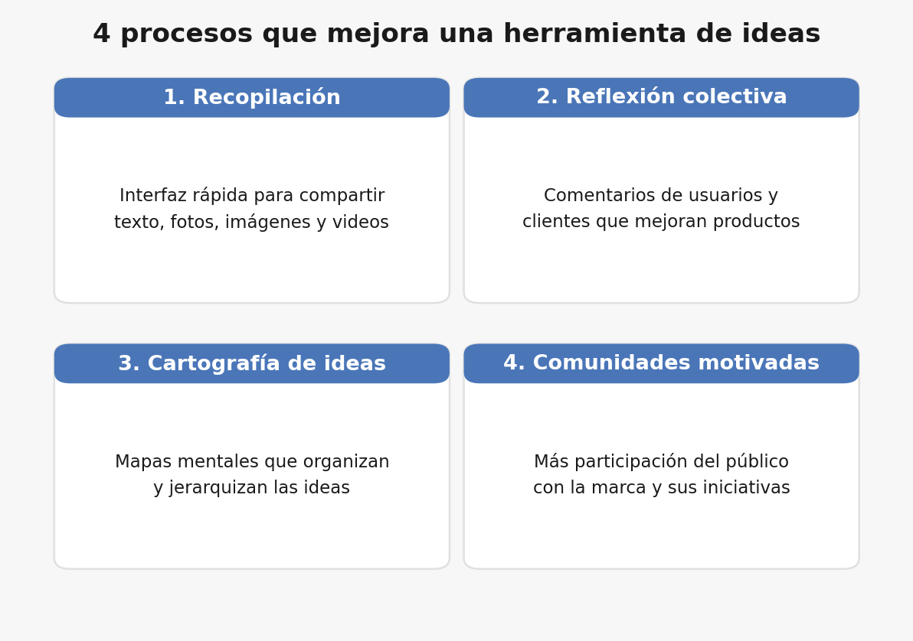
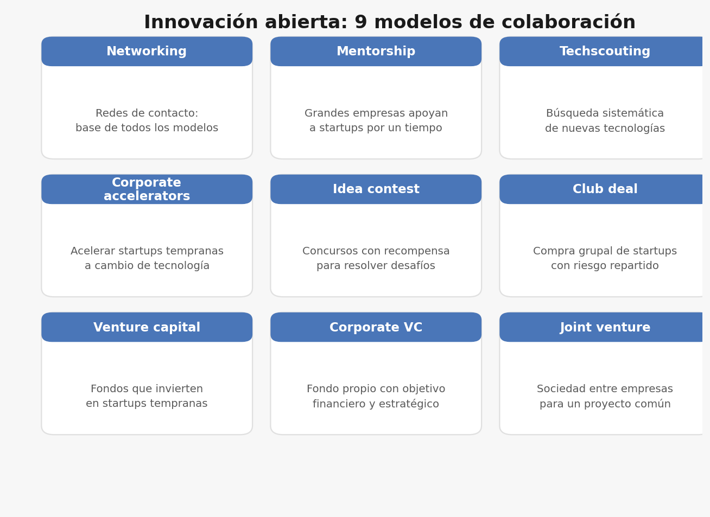

Las ideas son materia prima: sin sistema para capturarlas se pierden. Herramientas tecnológicas, redes externas y plantillas convierten ideas en proyectos.
Pulsa Escape o haz clic fuera de la imagen para cerrar.
Clase 10 · Cultura de Innovación
1 Idea central
Las ideas son materia prima: sin sistema para capturarlas se pierden. Herramientas tecnológicas, redes externas y plantillas convierten ideas en proyectos.
2 4 conceptos clave
Capturar, centralizar y colaborar en un solo lugar.
Chesbrough, 2003: las ideas entran y salen del exterior.
6 modalidades: creador, construcción, apalancamiento, expansión, defensor y seguidor rápido.
Idea Canvas: de la idea vaga a la idea trabajada.
3 Relación: las dos fases del proceso de innovación
Generar soluciones o ideas novedosas. La sesión creativa da materia prima.
Implementar las ideas hasta su puesta en marcha, con Idea Canvas.
Testear rápido y barato para aprender, no solo para validar.
Defensa de la idea en no más de 3 minutos.
Idea → gestión → piloto → pitch: sin piloto y sin pitch, la idea no cruza el puente a la implementación.
4 Lo esencial de la clase
Captura abierta, base de datos central, colaboración y búsqueda organizada.
Beneficios: nuevas oportunidades, menos costos y mejor gestión del riesgo.
| Creador | Apple — interrumpe mercados. |
|---|---|
| Construcción | Nike — datos del cliente + diseño. |
| Apalancamiento | Zara — modelo de negocio superior. |
| Expansión | Gilead — mercados adyacentes. |
| Defensor | Industrias maduras. |
| Seguidor rápido | Responde rápido y mejora. |
| Ideas sin centralizar | Se pierden en chats y correos. |
|---|---|
| Idea = producto final | Se descarta por "no factible" sin probarla. |
| Solo recursos internos | Menos creatividad y ciclos largos. |
| Castigar el error | La gente deja de proponer. |
| Mala defensa | Idea buena rechazada por formato. |
5 Flujo del concepto: de la idea al proyecto
Idea → plantilla → piloto → pitch: las plantillas obligan a pasar de la idea vaga a la idea trabajada.
6 Gráficos de la clase


Nike (modalidad construcción de soluciones): combina la observación profunda del cliente con datos, diseño y tecnología para crear sensores en zapatos con feedback personalizado. El modelo BCG elegido alinea el esfuerzo con el objetivo del negocio.
Qué recordar
Idea clave: muchas ideas se pierden por mala presentación, no por mal contenido.
+Temas complementarios del apunte
Característica · Descripción Captura abierta · Incluye clientes, empleados y socios mediante aplicaciones y formularios web. Base de datos central · Reagrupa todas las ideas y opiniones en un solo lugar. Colaboración · Permite modificar, comentar y complementar las ideas recolectadas. Búsqueda organizada · Funcionalidad para seleccionar, filtrar y rechazar ideas.
Aspecto · Modelo cerrado · Modelo abierto Entrada · Única: conocimiento científico y tecnológico interno · Múltiples: ideas y tecnología entran y salen en distintas fases Proceso · Lineal: desarrollo → pocos productos al mercado · Flexible: varios caminos para llevar un producto al mercado Riesgo · Se asume solo · Se comparte con aliados
Apartado · Qué contiene Idea · Qué problema resuelve; activar el insight y explicar el problema propuesto. Puntos críticos · Lo más fuerte de la idea y dónde podría fallar. Impacto · A quién impacta en positivo y en negativo (anticipar a quien no le guste). Por aclarar · Datos faltantes para convertir la idea en proyecto.
Herramienta · Para qué sirve Redefinición heurística · Crea una imagen del sistema y sus partes para enfocar la ideación. Útil cuando el trabajo por hacer (JTBD) está mal definido o es muy amplio. Desafío creativo · Cuestiona la solución actual: "¿Podemos eliminar algún elemento?", "¿Hay alternativas?". Mejora funciones insuficientes o elimina las no deseadas. Clasificación y refinamiento · Hace las ideas más…
Término · Definición · Ejemplo Gestión de ideas · Proceso de recoger y organizar propuestas para mejorar productos y servicios · Base de ideas con votación y comentarios Innovación abierta · Usar redes externas para crear y compartir conocimiento · Chesbrough, 2003 Techscouting · Búsqueda sistemática de tecnologías útiles para la empresa · Equipo que evalúa startups de IA Idea contest · Concurso público con…
Las afirmaciones y datos provienen de estas fuentes. Tipo: oficial = autor/creador; tercero = prensa o fuente secundaria. Herramientas de gestión de ideas # · Fuente · Tipo · URL 1 · APPVizzer. Las mejores herramientas para gestión de ideas · Tercero